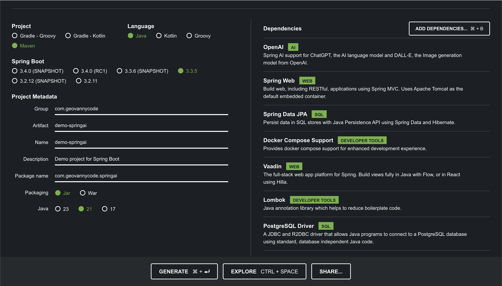

Configuración de Entorno
Paso 1: Configuración del Proyecto en Spring Initializr
Para comenzar, accede a Spring initialzr y configura el proyecto de la siguiente manera:
- Project: Maven
- Language: Java
- Spring Boot: 3.+ (la última versión estable)
- Project Metadata:
- Group: com.geovannycode
- Artifact: springai
- Name: springai
- Packaging: Jar
- Java: 21
Paso 2: Adicionar Dependencias
Agregamos las siguientes dependencias en el archivo pom.xml:

Agrega las siguientes dependencias en el archivo pom.xml para preparar tu proyecto. Cada dependencia tiene un propósito específico que te ayudará a lograr la funcionalidad deseada en el workshop.
-
OpenAI -
spring-ai-openai-spring-boot-starterEsta dependencia permite la integración de Spring AI con modelos de inteligencia artificial de OpenAI, incluyendo modelos como ChatGPT y DALL-E para generación de texto e imágenes. Con esta dependencia, podrás acceder a funcionalidades avanzadas de IA para agregar capacidades de generación de contenido a tu aplicación. -
Spring Web -
spring-boot-starter-webProporciona las herramientas necesarias para construir aplicaciones web, incluyendo API REST. Utiliza Spring MVC y Apache Tomcat como servidor web embebido, lo que facilita la creación de endpoints HTTP para que los usuarios puedan interactuar con tu aplicación a través de la web. -
Spring Data JPA -
spring-boot-starter-data-jpaEsta dependencia te permite trabajar con bases de datos SQL de forma más eficiente mediante la API de Persistencia de Java (JPA). Proporciona herramientas para realizar operaciones CRUD (Crear, Leer, Actualizar, Eliminar) en tu base de datos, simplificando el acceso a datos y la persistencia. -
Docker Compose Support -
spring-boot-docker-composeEsta dependencia facilita la configuración y gestión de contenedores Docker en tu proyecto. Al usar Docker Compose, puedes ejecutar múltiples servicios, como bases de datos, en contenedores, lo que facilita el despliegue de ambientes de desarrollo completos. -
Vaadin -
vaadin-spring-boot-starterVaadin es un framework para construir aplicaciones web modernas y reactivas con Java. Con esta dependencia, podrás crear interfaces de usuario de manera sencilla utilizando componentes visuales y vistas completamente en Java o integrando tecnologías como Hilla para un enfoque más dinámico. -
Lombok -
lombokLombok es una biblioteca que reduce el código repetitivo en Java, como getters, setters, y constructores. Es muy útil para simplificar el código y mantenerlo limpio y legible, especialmente en clases que necesitan muchas propiedades y métodos de acceso. -
PostgreSQL Driver -
postgresqlProporciona el controlador JDBC para conectarse a una base de datos PostgreSQL, permitiendo la comunicación entre tu aplicación y la base de datos. Esta dependencia es esencial para almacenar y recuperar datos desde PostgreSQL. -
Spring Boot Starter Test -
spring-boot-starter-testIncluye herramientas para pruebas unitarias e integradas en Spring Boot, como JUnit y Mockito. Esta dependencia es útil para asegurarte de que tu código funciona correctamente antes de desplegarlo.
Paso 3: Generación y Configuración del Proyecto
Una vez configuradas todas las opciones y dependencias, presiona el botón "Generate" en Spring Initializr para generar el proyecto. Descarga el archivo .zip, descomprímelo y abre el proyecto en tu IDE preferido, como IntelliJ IDEA.
Con estas dependencias configuradas, estarás listo para comenzar a desarrollar la aplicación. A continuación, detallaré los pasos para configurar el entorno y explicaré cómo utilizar cada dependencia en el contexto del proyecto.
Paso 4: Crear los Paquetes
Basado en tu estructura, necesitamos los siguientes paquetes:
- model: Contendrá las clases de entidad o modelo.
- dto: Aquí almacenaremos los objetos de transferencia de datos (DTOs) que utilizaremos para la comunicación entre el frontend y el backend.
- repo: Este paquete contendrá las interfaces que representan los repositorios (interfaces de JPA) para interactuar con la base de datos.
- service: Contendrá la lógica de negocio, dividiendo entre interfaces y sus implementaciones en el subpaquete
impl. - controller: Este paquete contendrá los controladores para gestionar las solicitudes HTTP.
Paso 5: Paquete model
En una aplicación que sigue la arquitectura MVC (Modelo-Vista-Controlador), el paquete model se encarga de representar el "Modelo" de datos de la aplicación. Aquí es donde definimos las clases que mapean las entidades de negocio que queremos almacenar y gestionar en nuestra base de datos.
En este caso, el paquete com.geovannycode.model contendrá las clases Author y Book, que representan respectivamente a los autores y libros en el contexto de nuestra aplicación. Estas clases de modelo (o entidades) serán mapeadas a tablas en la base de datos mediante las anotaciones de JPA (Java Persistence API), lo que nos permite trabajar con datos persistentes de una manera orientada a objetos.
En nuestro caso, el paquete model contendrá las clases Author y Book, que definirán los atributos y relaciones de las entidades "Autor" y "Libro", permitiéndonos interactuar con estos datos de manera estructurada y consistente.
- Líneas 11-12:
@AllArgsConstructory@NoArgsConstructorLombok genera un constructor con todos los argumentos y un constructor sin argumentos. - Líneas 13:
@EntityIndica que esta clase es una entidad deJPA, lo que significa que estará mapeada a una tabla en la base de datos. - Líneas 14:
@Data: Genera automáticamente getters, setters, y otros métodos comotoString(),equals(), yhashCode(), gracias a Lombok. - Líneas 17-19:
@Idy@GeneratedValue(strategy = GenerationType.IDENTITY): Configura idAuthor como la clave primaria y define que se generará automáticamente. - Líneas 21:
@ColumnDefine restricciones para los campos de la entidad, como nullable, y establece límites de longitud para los atributos firstName, lastName, country, y urlPhoto.
- Líneas 11-12:
@Data,@AllArgsConstructor,@NoArgsConstructor,@EntityLas mismas anotaciones y sus funciones, como en la clase Author. - Líneas 21:
@ColumnDefine las restricciones de los campos, incluyendoname,review, yurlCover. - Líneas 27:
@ManyToOney@JoinColumn(name = "id_author", nullable = false)Define una relación de muchos a uno con la claseAuthor, especificando que cada libro pertenece a un autor.id_authores la columna de clave externa en la base de datos que relaciona ambas entidades. - Líneas 35:
boolean enabledEste campo que representa si el libro está activo o no, con una restricción nullable = false para garantizar que siempre tenga un valor.
Paso 6: Paquete repo
En la arquitectura de una aplicación basada en MVC, el paquete repo(abreviatura de "repository") es donde definimos las interfaces que se encargan de la interacción directa con la base de datos. Estas interfaces representan los "Repositorios" que permiten realizar operaciones CRUD (Crear, Leer, Actualizar, Eliminar) y consultas específicas en nuestras entidades de negocio (en este caso, Author y Book).
En este paquete, ubicaremos las interfaces IAuthorRepo e IBookRepo, las cuales extienden de JpaRepository. Esta extensión nos facilita la gestión de nuestras entidades mediante JPA, ya que hereda un conjunto de métodos predefinidos para realizar operaciones comunes sin tener que escribir código adicional.
Creación de las Interfaces IAuthorRepo e IBookRepo
| IAuthorRepo.java | |
|---|---|
IAuthorRepo: Es una interfaz que extiende de JpaRepository, la cual está diseñada para la entidadAuthor.JpaRepository<Author, Integer>: Al extender deJpaRepository, estamos indicando que esta interfaz manejará la entidadAuthorcon una clave primaria de tipoInteger. Esto nos proporciona métodos predeterminados para realizar operaciones CRUD en la tablaAuthor, comofindAll(),findById(),save(), ydeleteById().
Ventaja: Spring Data JPA proporciona automáticamente la implementación de estos métodos, por lo que no necesitamos escribir código adicional para operaciones básicas en la entidad Author.
| IBookRepo.java | |
|---|---|
- Líneas 7:
findByNameLike(String name)Aquí hemos definido un método adicional para realizar una búsqueda personalizada. Este método busca libros cuyo nombre sea similar al parámetroname(utilizando el operador SQLLIKEinternamente). La convención de nombrefindByNameLikepermite que Spring Data JPA implemente automáticamente el método sin que sea necesario escribir una consulta SQL explícita.
Ventaja: La capacidad de definir métodos personalizados con convenios de nomenclatura en las interfaces de repositorio hace que las consultas personalizadas sean fáciles de implementar y entender.
Paso 7: Paquete service
La capa de servicio en la arquitectura de una aplicación MVC contiene la lógica de negocio. En esta capa, creamos interfaces y sus implementaciones que definen las operaciones que la aplicación realizará sobre las entidades de datos (Author y Book). Esta capa actúa como un intermediario entre los controladores (que reciben las solicitudes del usuario) y los repositorios (que interactúan con la base de datos).
En este caso, vamos a crear un enfoque genérico utilizando una interfaz llamada ICRUD que definirá los métodos CRUD (Crear, Leer, Actualizar, Eliminar) de forma genérica. Las interfaces específicas IBookService e IAuthorService extenderán de ICRUD, heredando así los métodos CRUD básicos.
Interfaz Genérica ICRUD
La interfaz ICRUD permite definir métodos genéricos para operaciones CRUD. Esto nos permite reutilizar esta interfaz para diferentes tipos de datos, en lugar de escribir métodos repetitivos en cada servicio específico.
| ICRUD.java | |
|---|---|
T y ID: Son parámetros genéricos. T representa el tipo de entidad (como Author o Book), e ID representa el tipo de clave primaria (como Integer).
- Métodos CRUD:
save(T t): Guarda una entidad en la base de datos.saveAll(List<T> t): Guarda una lista de entidades en la base de datos.update(T t, ID id): Actualiza una entidad existente con un ID específico.findAll(): Devuelve todas las entidades.findById(ID id): Devuelve una entidad según el ID.delete(ID id): Elimina una entidad según el ID.
Al definir estos métodos de manera genérica, podemos reutilizar esta interfaz en cualquier clase de servicio que maneje entidades distintas, manteniendo así la consistencia y reduciendo el código duplicado.
Interfaz IBookService
La interfaz IBookService extiende de ICRUD especificando que trabajará con la entidad Book y que el tipo de la clave primaria es Integer. Esto significa que IBookService hereda todos los métodos de ICRUD para operar con entidades Book.
| IBookService.java | |
|---|---|
Interfaz IAuthorService
Similar a IBookService, la interfaz IAuthorService extiende de ICRUD, especificando que trabajará con la entidad Author y que el tipo de la clave primaria es Integer. Al extender ICRUD, IAuthorService hereda todos los métodos para operar con entidades Author.
| IAuthorService.java | |
|---|---|
Con las interfaces IBookService e IAuthorService creadas, estamos listos para implementar la lógica en sus clases correspondientes (BookServiceImpl y AuthorServiceImpl) dentro de la subcarpeta impl.
Implementaciones de Servicio
Ambas clases (AuthorServiceImpl y BookServiceImpl) utilizan la anotación @Service, lo que indica que son componentes de servicio en Spring, y estarán disponibles como beans de Spring. Al implementar las interfaces de servicio (IAuthorService e IBookService), estas clases proporcionan la lógica de negocio para cada operación CRUD.
Uso de @RequiredArgsConstructor
La anotación @RequiredArgsConstructor de Lombok genera un constructor que inicializa los atributos final, en este caso, IAuthorRepo para AuthorServiceImpl e IBookRepo para BookServiceImpl. Esto permite la inyección de dependencias de manera automática, ya que Spring inyectará los repositorios necesarios al crear instancias de estas clases.
- Líneas 16:
save(Author author)Guarda un nuevo autor en la base de datos. - Líneas 21:
saveAll(List<Author> list)Guarda una lista de autores en la base de datos. - Líneas 26:
update(Author author, Integer id)Actualiza un autor existente. Primero verifica si el autor existe en la base de datos (existsById(id)). Si existe, actualiza el autor con el ID proporcionado; si no, lanza una excepción. - Líneas 35:
findAll()Devuelve todos los autores en la base de datos. - Líneas 40:
findById(Integer id)Busca un autor por su ID. Si no se encuentra, devuelve un objeto Author vacío. - Líneas 45:
delete(Integer id)Elimina un autor según su ID.
Paso 8: Paquete controller
En la arquitectura MVC, la capa de controladores (o controller) es la que se encarga de recibir y manejar las solicitudes HTTP del cliente (como GET, POST, PUT, DELETE) y de devolver respuestas adecuadas. En este caso, implementaremos dos controladores: AuthorController y BookController, que gestionarán las operaciones CRUD para los autores y libros, respectivamente.
Ambos controladores están anotados con @RestController, lo que indica que son componentes de Spring MVC que procesan directamente las solicitudes HTTP y devuelven datos en formato JSON. Utilizamos @RequestMapping para definir el punto de entrada base para cada controlador (/authors y /books), y @CrossOrigin para permitir solicitudes CORS desde cualquier origen, lo cual es útil cuando el frontend y el backend están en diferentes dominios durante el desarrollo.
-
@GetMapping:
findAll(): Maneja las solicitudes GET en/authorsy devuelve una lista de todos los autores en la base de datos.findById(Integer id): Maneja las solicitudes GET en/authors/{id}para obtener un autor por su ID.
-
@PostMapping:
save(Author author): Maneja las solicitudes POST en/authorspara crear un nuevo autor.
-
@PutMapping:
update(Author author, Integer id): Maneja las solicitudes PUT en/authors/{id}para actualizar un autor existente. Si el autor se encuentra y se actualiza correctamente, devuelve la entidad actualizada.
-
@DeleteMapping:
deleteById(Integer id): Maneja las solicitudes DELETE en/authors/{id}para eliminar un autor por su ID. Retorna una respuesta vacía con código 200 (OK) si la eliminación es exitosa.
Explicaciones Adicionales
- ResponseEntity:
- Utilizamos
ResponseEntitypara construir la respuesta HTTP con el estado adecuado, permitiendo personalizar el cuerpo y los encabezados de la respuesta. Por ejemplo, en el método save, utilizamosResponseEntity.created(...)para indicar que el recurso fue creado exitosamente.
- Utilizamos
- @CrossOrigin(origins = "*"):
- Esta anotación permite solicitudes desde cualquier origen, lo cual es útil para habilitar CORS (Cross-Origin Resource Sharing) en aplicaciones de frontend que se ejecutan en diferentes dominios o puertos durante el desarrollo. Puede ser configurada para limitar el origen de las solicitudes en un ambiente de producción.
- @PathVariable y @RequestBody:
@PathVariablepermite extraer variables de la URL, como el ID del autor o libro.@RequestBodypermite deserializar el cuerpo de la solicitud en un objeto Java. En este caso, se usa para recibir los datos deAuthoroBooken los métodossaveyupdate.
Paso 9: Crear Archivos JSON en el Paquete resources/json
Crea una carpeta llamada json dentro de src/main/resources, y luego agrega los archivos authors.json y books.json con el contenido proporcionado.
| authors.json | |
|---|---|
Estos archivos JSON contienen los datos iniciales de Author y Book que se cargarán automáticamente en la base de datos cuando se inicie la aplicación.
Paso 10: Configuración del Archivo application.yml
En el archivo application.yml, ubicado en src/main/resources, agrega la siguiente configuración para establecer las propiedades de JPA y la clave API de OpenAI.
| application.yml | |
|---|---|
- Líneas 1-4:
spring.jpa.hibernate.ddl-auto createEsta propiedad le indica a Hibernate que cree las tablas en la base de datos automáticamente al iniciar la aplicación. - Líneas 6:
database-platform org.hibernate.dialect.PostgreSQLDialectEspecifica el dialecto de PostgreSQL para que Hibernate sepa cómo interactuar correctamente con la base de datos. - Líneas 7-9:
ai.openai.api-keyConfigura la clave API para acceder a los servicios de OpenAI. ReemplazaSPRING_AI_OPENAI_API_KEYcon tu clave API de OpenAI.
Paso 11: Actualizar la Clase SpringaiApplication
La clase SpringaiApplication debe implementar ApplicationRunner para cargar los datos de authors.json y books.json al inicio de la aplicación.
- Líneas 19:
@SpringBootApplicationAnota la clase principal como una aplicación Spring Boot. - Líneas 19:
@RequiredArgsConstructorGenera un constructor para inyectar las dependencias ResourceLoader, IAuthorService, eIBookService. - Líneas 19:
run(ApplicationArguments args)Este método se ejecuta al iniciar la aplicación. - Líneas 19:
Cargar archivos JSONUsa ResourceLoader para obtener los archivosauthors.jsonybooks.json. - Líneas 19:
Leer el contenidoUtilizaFileCopyUtilspara leer el contenido de los archivos JSON enbyte[]y luego los convierte aString. - Líneas 19:
Convertir JSON a objetos JavaUsaObjectMapperde Jackson para convertir el JSON en listas de objetosAuthoryBook. - Líneas 19:
Guardar en la base de datosUtilizaauthorServiceybookServicepara guardar los datos en la base de datos.
Paso 12: Archivo docker-compose.yml
Este archivo utiliza la configuración de Docker Compose para iniciar un servicio de base de datos PostgreSQL en un contenedor. Con este archivo, puedes levantar el contenedor de PostgreSQL con solo un comando, lo que simplifica el manejo del entorno de desarrollo y asegura que todos los colaboradores del proyecto tengan una configuración consistente.
Explicación de la Configuración
-
version: "3.8": Especifica la versión de Docker Compose. La versión 3.8 es compatible con las últimas características de Docker. -
services: Define los servicios que Docker Compose gestionará. En este caso, tenemos solo un servicio postgres_db para PostgreSQL. -
postgres_db:container_name: Nombre del contenedor. Esto facilita la identificación del contenedor en la lista de contenedores activos.image: Especifica la imagen de Docker que se utilizará. En este caso,postgresse descargará de Docker Hub.env_file: Carga variables de entorno desde un archivo.envubicado en la raíz del proyecto. Este archivo debe contener las credenciales de la base de datos y otros detalles de configuración.ports: Mapea el puerto de PostgreSQL en el contenedor (DB_DOCKER_PORT) a un puerto en la máquina local (DB_LOCAL_PORT). Esto permite acceder a la base de datos desde la máquina host.environment: Define variables de entorno adicionales específicas del servicio, como el nombre de usuario, la contraseña y el nombre de la base de datos.volumes: Monta un volumen persistente (postgres-data) en el contenedor, mapeado al directorio especificado enDB_VOLUME_URL(ubicado en el archivo.env). Esto asegura que los datos de la base de datos se mantengan incluso si el contenedor se reinicia o elimina.
volumes: Define el volumenpostgres-datapara la persistencia de datos, lo que permite que la información almacenada en PostgreSQL persista entre reinicios de contenedores.
Descarga del Proyecto Base
Para facilitar el inicio del taller y omitir la configuración inicial del entorno, puedes descargar el proyecto base desde el repositorio de GitHub en la rama 01_Structure_Project. Esto te permitirá comenzar directamente con el código y la estructura básica del proyecto ya configurados.
Puedes acceder al proyecto en la siguiente URL:
Esta rama incluye toda la estructura inicial del proyecto, permitiéndote enfocarte en el desarrollo de las funcionalidades de IA generativa sin preocuparte por la configuración básica del entorno.